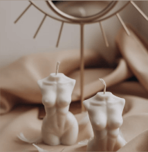

Створіть атмосферу затишку та гармонії!
Створіть особливу атмосферу у своєму домі з нашою екологічно чистою та якісною продукцією зі 100% натуральної соєвого воску.

Про нас
Богдан творець бренду який завжди зацікавлений у виготовленні різноманітних речей вдома. Він регулярно експериментував з різними матеріалами та інструментами, спробувавши свої сили у багатьох галузях, включаючи виготовлення свічок.
Ссоєвий віск виготовляють із соєвих бобів, що зрощуються в Данії, і цей вид воску є екологічно чистим та безпечним для здоров'я.
-
Насолоджуйтеся моментом
-

Створіть улюблену атмосферу
-

Виготовлені з любов'ю
Наші товари
Ми використовуємо тільки найкращі якісні матеріали: соєвий віск, віскові барвники, високоякісні ароматичні олії та бавовняні фітільці. Відтінки свічок дуже гармонійно поєднуються з ароматом, створюючи незабутню атмосферу у вашому домі.
10$
"Сердечко кохання"
Запах: ніжний аромат троянди та ванілі. Для чого: для атмосфери романтичного настрою

20$
"Вихір кохання"
Запах: ніжний аромат лаванди.
Для чого: для створення атмосфери затишку

10$
"Веселка"
Запах: Свіжий аромат лайма.
Для чого: для енергії та свіжості в приміщені.
10$
"Жіноча чарівність"
Запах: ніжний аромат лаванди та фрезій. Для чого: для затишку та комфорту.
Етапи створення свічок
Створення свічки із соєвого воску може складатися з наступних етапів:
Підготовка матеріалів: дрібні фрагменти соєвого воску, фітіль для свічки, ароматизатори, барвники та інші додаткові матеріали.
01
Підготовка форми: вибір форми для свічки та підготовка її до наповнення воском.

02

Приготування воску: розплавлення соєвого воску у плавильному пристрої до потрібної температури. Додавання ароматизаторів та барвників за необхідності.
03
Підготовка фітіля: вставлення фітіля до форми та зафіксування його так, щоб він був рівномірно напружений.
04
Підготовка матеріалів: дрібні фрагменти соєвого воску, фітіль для свічки, ароматизатори, барвники та інші додаткові матеріали.

05
Наповнення форми: воск налити до форми, поки вона не заповниться повністю. Чекати, доки він затвердіє.

06

Приготування воску: розплавлення соєвого воску у плавильному пристрої до потрібної температури. Додавання ароматизаторів та барвників за необхідності.
07

Підготовка фітіля: вставлення фітіля до форми та зафіксування його так, щоб він був рівномірно напружений.
08
Підготовка матеріалів: дрібні фрагменти соєвого воску, фітіль для свічки, ароматизатори, барвники та інші додаткові матеріали.

09
Наповнення форми: воск налити до форми, поки вона не заповниться повністю. Чекати, доки він затвердіє.
10
Наші курси
Наші курси дозволяють зробити перший крок в новій кар'єрі або поглибити знання в своїй галузі, розвиватися як професіонал, а також покращити якість свого життя.

Основи виготовлення свічок
Навчання - 20 год
Ціна -40$
Основи виготовлення свічок
Будем навчати основам виготовлення свічок з різних матеріалів.

Мистецтво ароматерапії
Навчання - 20 год
Ціна -40$
Мистецтво ароматерапії
Будем вивчати мистецтво ароматерапії та виготовлення свічок з різними ароматами.